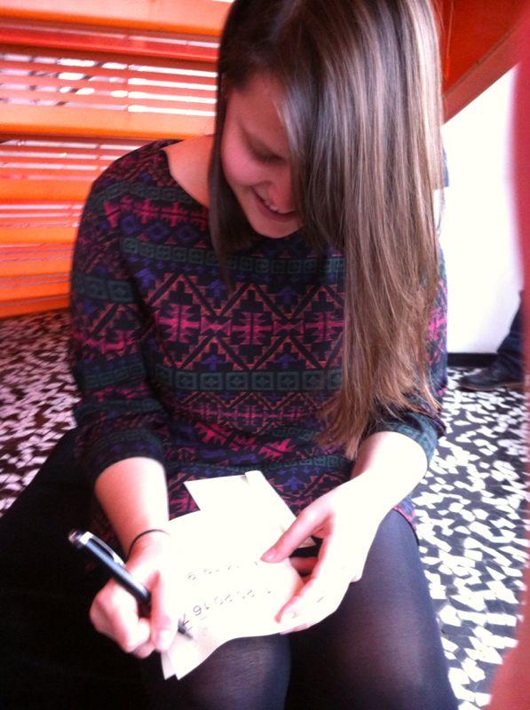
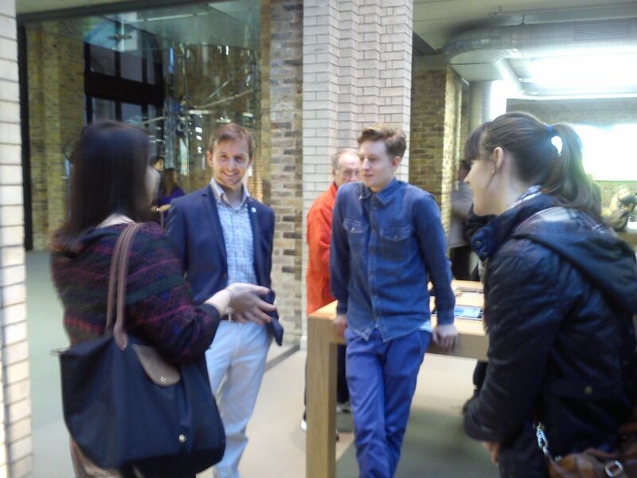
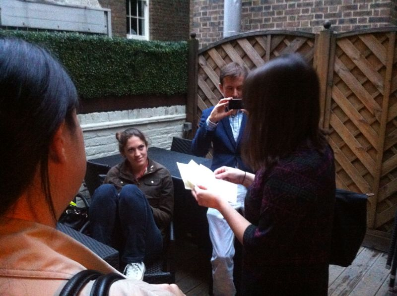

The Proposal
Her Story
Firstly for those of you who don’t know, I love puzzles. As a child my mom used to make up scavenger hunts for me. So when Edward said he had planned a scavenger hunt for me, at a surprise time, I didn't really think anything of it (besides being excited and hating that I wouldn’t know when it was planned!)
On Sunday, October 27, Edward left me at home watching Hook to go "help his Dad with a few things" with our flatmate, Chris.
About ten minutes later Edward called me and told me that my scavenger hunt had started and directed me to my first clue. Very excited that my scavenger hunt was starting, I had Chris to help me along the way. The first clue sent us to Sushi Samba in the Heron Tower where we met Ashling and Jenny.  Little did Chris and I know that we were right on Edward's heels; as we went up one elevator, Edward was coming down the other. Ashling and Jenny did such a good job in distracting me, that I almost forgot that I was waiting for my next clue. Once Edward got far enough ahead of us, he gave them the go ahead and I got my second clue.
After getting slightly confused about the word puzzle, I figured out that our next stop was the Apple Store. Not knowing who we were supposed to be meeting at the Apple Store, Ashling, Jenny and I waited while Chris went to go find my next clue-giver. I didn't know it at the time, but Edward had arranged for Luke to FaceTime my mom to give me my third clue. As luck would have it, she was out shopping and I ended up having to call her instead.
My fourth clue sent us to the a pub called the Ship and Shovel, but when we arrived, I found that it was closed! Chris had another clue for me which sent us to another nearby pub where Erin and Fliss were waiting on patio. Their clue took me a minute or two to figure out, but once I did, we were off to the National Theatre.
So far, I still didn't have a clue that there was anything going on except a Sunday out walking around with friends.
When we got to the National Theatre, we found Matt, Rich and Arran playing one of our favorite board games. Their clue was to "go to where the picture shows" and a puzzle of the first picture that Edward and I took together, three years before. Chris then informed me that I had to go to my final stop on my own.

At this point, something finally clicked and I thought that something had to be going on. I then walked to the Oxo Tower, where the picture in the puzzle had been taken. There were so many thoughts rushing through my head that I walked past Edward who was waiting for me on a pier in the river.
Once I finally got to Edward, it took me all of about twenty seconds before I couldn't stop myself from saying "YES!", even though he hadn't asked the question yet.
As most of Edward's helpers had joined in along the way, we then went up the Oxo Tower to celebrate with something fizzy before we went out to a celebratory Mexican with The Shiplees.

Everything about the day made it absolutely perfect. I think it's safe to say, Edward did an amazing job with his proposal!